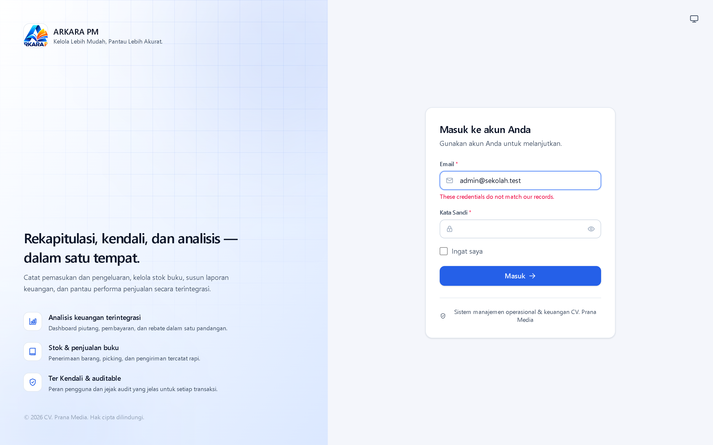
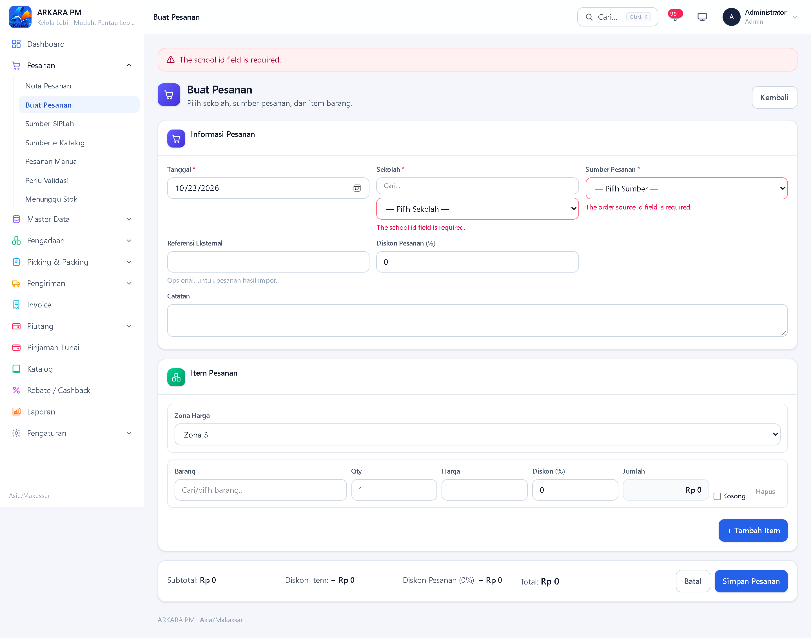
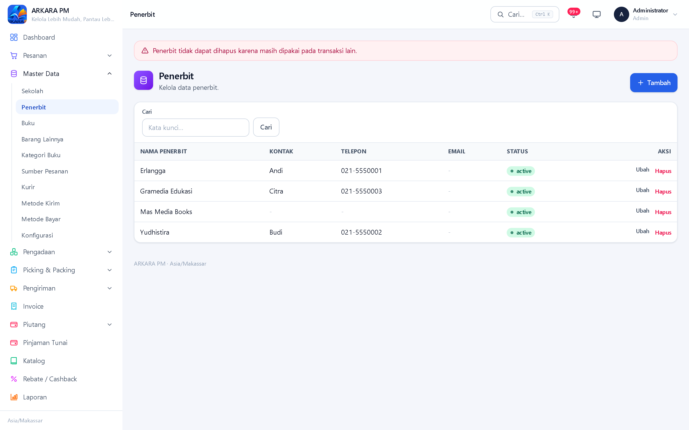

Bagian VII
Kumpulan pesan yang benar-benar muncul dari aplikasi, apa artinya, dan apa yang harus Anda lakukan. Disusun berdasarkan sebab, bukan berdasarkan dugaan.

| Pesan yang muncul | Sebab & tindakan |
|---|---|
| These credentials do not match our records. | Email atau kata sandi tidak cocok. Periksa ejaan email dan huruf besar/kecil pada kata sandi. Bila tetap gagal, minta administrator mengatur ulang kata sandi. |
| Too many login attempts. Please try again in … seconds. | Terlalu banyak percobaan gagal. Aplikasi membatasi lima percobaan; setelah itu tunggu sebentar sebelum mencoba lagi. Jangan terus menebak — tunggu, lalu pastikan kredensialnya benar. |
| The email field is required. (atau pesan serupa) | Ada kolom yang belum diisi. Pesan validasi bawaan aplikasi tampil dalam bahasa Inggris. |
Pesan yang berasal dari kerangka kerja dasar (validasi kolom, kegagalan login) memakai bahasa bawaan kerangka kerja, yaitu Inggris. Pesan yang dibuat khusus untuk aplikasi ini — misalnya soal stok atau rebate — berbahasa Indonesia. Keduanya sama-sama sah dan sama-sama berarti.
Bila halaman terbuka tetapi tampak seperti dokumen tanpa gaya — tanpa warna biru, tanpa sidebar yang rapi — biasanya berkas tampilan gagal dimuat. Ini bukan kesalahan Anda, dan biasanya bukan kesalahan data.
Keadaan ini biasanya muncul ketika penunjuk peladen pengembangan
(public/hot) tertinggal sementara peladen pengembangan tidak
berjalan. Menghapus berkas tersebut membuat aplikasi kembali memakai berkas
tampilan hasil bangun di public/build.
Sebelum melaporkan sebagai kesalahan, periksa tiga hal ini secara berurutan:
Aplikasi menampilkan keterangan yang berbeda-beda untuk daftar kosong, misalnya “Belum ada stok tercatat.”, “Belum ada aktivitas tercatat.”, atau “Tidak ada data untuk filter ini.” Yang terakhir menandakan penyaring Anda memang tidak menemukan apa pun — bukan bahwa datanya hilang.
| Pesan yang muncul | Arti & tindakan |
|---|---|
| Pesanan yang sudah diproses tidak dapat diubah. | Pesanan sudah melewati tahap draft. Batalkan pesanan tersebut lalu buat pesanan baru yang benar. |
| Pesanan ini tidak dapat dikonfirmasi pada status saat ini. | Pesanan sudah berjalan (misalnya sudah dikirim sebagian). Konfirmasi hanya berlaku untuk pesanan Draft atau Pesanan Diterima. |
| Pesanan tidak memiliki item. | Pesanan dibuat tanpa barang. Ubah pesanan dan tambahkan minimal satu barang. |
| Pesanan harus memiliki minimal satu item. | Sama seperti di atas — formulir dikirim tanpa baris barang. |
| Pesanan yang sudah dikirim sebagian tidak dapat dibatalkan. | Sudah ada barang yang keluar gudang. Pembatalan tidak dimungkinkan; selesaikan sisanya atau buat pengiriman penyesuaian. |
| Referensi pesanan eksternal ini sudah pernah diimpor untuk sekolah tersebut. | Nomor referensi dari sistem luar sudah dipakai. Periksa daftar pesanan sekolah itu, atau kosongkan kolom referensinya bila memang bukan impor. |

Bila formulir menolak disimpan, jangan menekan tombol berulang kali. Baca pesan yang muncul dan perbaiki kolom yang ditandai — biasanya hanya satu atau dua kolom. Isian lain tetap tersimpan, jadi Anda tidak perlu mengulang.
| Yang Anda lihat | Arti & tindakan |
|---|---|
| Sisa stok minus pada Rangkuman Stok. | Barang keluar atau mutasi melebihi barang masuk. Periksa penerimaan yang belum dikonfirmasi, pengiriman yang tercatat, dan mutasi yang salah jumlah. |
| Stok tidak bertambah setelah penerimaan disimpan. | Penerimaan berstatus Draft belum menambah stok. Buka dokumennya dan klik Konfirmasi. |
| Mutasi tidak dapat diubah atau dihapus. | Riwayat mutasi bersifat tetap. Buat catatan pembetulan sesuai kebijakan internal, bukan mengubah baris lama. |
| Penerimaan barang ini sudah dikonfirmasi sebelumnya. | Stok sudah pernah ditambah dari dokumen ini. Ini pengaman ganda; jangan diulang. |
| Penerimaan barang tidak memiliki item. | Dokumen penerimaan kosong. Tambahkan barang lebih dulu, baru konfirmasi. |
Ini bukan kerusakan. Angka pada Rangkuman Stok adalah selisih barang masuk dan keluar, sedangkan pesanan yang sudah dikonfirmasi memesan stok lebih dulu. Bila pesanan lain sudah memesan barang tersebut, sisa yang terlihat belum tentu bebas untuk pesanan baru. Periksa menu Back Order › Barang Tidak Tersedia, lalu tambah stok lewat penerimaan barang atau selesaikan pengiriman yang menahan stok.
| Pesan yang muncul | Arti & tindakan |
|---|---|
| Belum ada item yang siap dipicking untuk pesanan ini. | Belum ada stok yang bisa dipesan untuk pesanan tersebut. Konfirmasi pesanannya lebih dulu, dan pastikan stok sudah masuk. |
| Picking ini tidak dapat diubah pada status saat ini. | Picking sudah selesai atau sudah dikemas. Buat picking baru dari pesanan bila memang perlu menambah. |
| Picking harus selesai dipicking sebelum packing. | Simpan hasil picking lebih dulu. Baru setelah itu packing dapat diselesaikan. |
| Pesan yang muncul | Arti & tindakan |
|---|---|
| Pesanan belum dikonfirmasi sehingga belum dapat dikirim. | Konfirmasi pesanan lebih dulu di halaman detailnya. |
| Tidak ada kuantitas yang siap dikirim. | Belum ada barang yang dipicking dan dikemas, atau semuanya sudah dikirim. Periksa daftar picking. |
| Jumlah kirim untuk barang #N melebihi sisa yang siap dikirim (x). | Jumlah pada kolom kirim lebih besar daripada yang tersedia. Kecilkan angkanya menjadi paling banyak x. |
| Jumlah kirim melebihi stok yang direservasi untuk barang #N. | Terjadi ketidaksesuaian antara reservasi dan jumlah kirim. Jangan dipaksa; periksa kondisi stok dan pesanan terkait, lalu laporkan bila menetap. |
| Pesanan ini sudah dikonfirmasi. | Pengiriman sudah dikonfirmasi sebelumnya. Stok sudah berkurang; jangan diulang. |
| Hanya pengiriman yang sudah dikirim yang dapat ditandai diterima. | Konfirmasi kirim lebih dulu, baru tandai diterima. |
| Bukti foto pengiriman wajib dilampirkan. | Pilih berkas gambar lebih dulu. Syaratnya JPEG, PNG, atau WebP, maksimal 5 MB. |
| Bukti pengiriman maksimal 5 MB. | Perkecil ukuran foto, lalu unggah ulang. |
Foto dari telepon sering berukuran lebih dari 5 MB. Cara paling cepat: kirim foto itu ke diri sendiri lewat perpesanan (yang otomatis memperkecil ukurannya), lalu unggah hasil kirimannya.
| Pesan yang muncul | Arti & tindakan |
|---|---|
| Pengiriman belum dikonfirmasi sehingga belum dapat diinvoice. | Konfirmasi pengiriman lebih dulu, baru terbitkan invoice. |
| Belum ada pengiriman terkonfirmasi untuk diinvoice. | Pesanan belum punya pengiriman yang terkonfirmasi. |
| Tidak ada kuantitas yang dapat diinvoice (semua sudah pernah diinvoice). | Barang pada pengiriman itu seluruhnya sudah ditagih. Periksa daftar invoice sekolah tersebut. |
| Invoice membutuhkan data sekolah. | Data sekolah pada pesanan tidak lengkap. Lengkapi dulu di Master Data. |
| Invoice yang sudah memiliki pembayaran tidak dapat dibatalkan. | Balik dulu pembayarannya di halaman Riwayat Pembayaran, baru batalkan invoice. |
| Pesan yang muncul | Arti & tindakan |
|---|---|
| Invoice bukan milik sekolah pada pembayaran ini. | Alokasi diarahkan ke invoice sekolah lain. Pilih invoice milik sekolah yang sama. |
| Jumlah alokasi harus lebih dari nol. | Isi angka lebih dari nol pada kolom alokasi. |
| Total alokasi melebihi jumlah pembayaran. | Jumlah alokasi lebih besar daripada uang yang diterima. Kurangi alokasinya. |
| Alokasi melebihi sisa tagihan invoice. | Sisa tagihan invoice lebih kecil daripada alokasi. Periksa sisa terkini. |
Ini bukan kesalahan. Pembayaran yang baru dicatat berstatus Draft dan belum mengurangi piutang. Piutang baru berkurang setelah pembayaran diverifikasi. Periksa kolom Status pada baris pembayaran tersebut.
Rebate tidak lagi memiliki alur pengajuan, persetujuan, atau pembayaran. Nilainya otomatis menjadi diskon pada nota pesanan berdasarkan kolom Rebate (%) di data sekolah. Bila rekap terasa tidak sesuai, periksa hal-hal berikut.
| Yang Anda lihat | Arti & tindakan |
|---|---|
| Rekap rebate kosong. | Tidak ada nota dengan diskon lebih dari nol pada rentang tanggal itu. Periksa apakah sekolah memiliki Rebate (%) dan apakah notanya sudah dibuat setelah nilai itu diisi. |
| Nilai rebate berbeda dari persentase sekolah saat ini. | Nilai rebate disimpan pada nota saat nota dibuat. Perubahan persentase hanya berlaku untuk nota berikutnya. |
| Tidak ada tombol Ajukan, Setujui, atau Bayar. | Memang tidak ada. Halaman Rebate / Cashback hanya menampilkan rekap. Untuk mengubah besaran rebate, ubah data sekolah. |
| Diskon pada nota tidak sama dengan total rebate di rekap. | Diskon nota dapat diubah manual saat pesanan dibuat. Rekap mengikuti nilai diskon yang benar-benar tersimpan pada nota, bukan hanya persentase sekolah. |
| Pesan yang muncul | Arti & tindakan |
|---|---|
| <Nama data> tidak dapat dihapus karena masih dipakai pada transaksi lain. | Data ini terpakai pada pesanan, penerimaan, atau dokumen lain. Pindahkan atau hapus dulu data yang menggunakannya. |
| Tidak dapat menghapus akun sendiri. | Ini pengaman agar sistem tidak kehilangan administrator terakhirnya. Minta administrator lain untuk menghapusnya. |
Ketika penghapusan ditolak karena data masih terpakai, aplikasi menampilkan pesan merah di bagian atas halaman dan data tidak terhapus.

Beberapa proses memang dilindungi dari pengulangan (misalnya konfirmasi penerimaan dan konfirmasi pengiriman akan menolak yang kedua). Namun pembuatan data baru tidak selalu terlindungi. Lebih baik menunggu dan memeriksa daripada mengklik berkali-kali.
Hubungi administrator bila salah satu hal berikut terjadi:
Saat melapor, sebutkan: halaman apa yang Anda buka, apa yang Anda lakukan, pesan apa yang muncul, dan kapan kejadiannya. Empat informasi itu memangkas waktu penelusuran secara drastis.